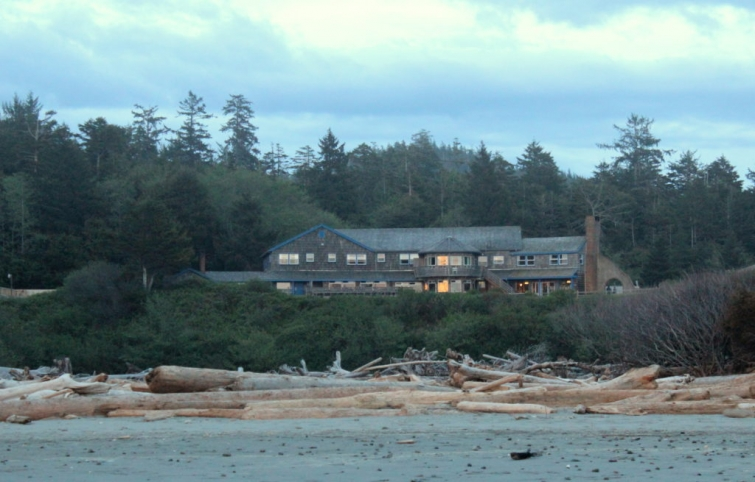
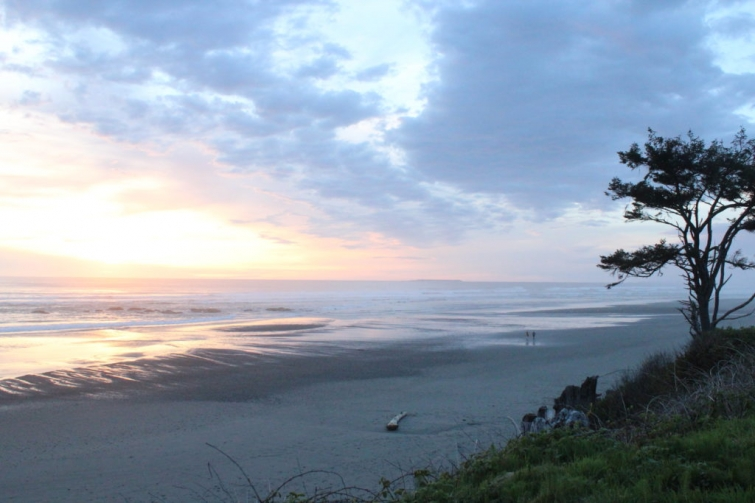
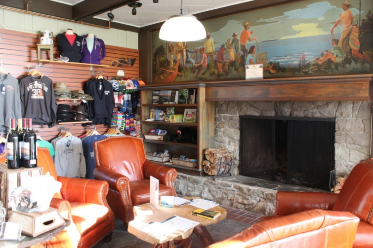

.png)
.PNG)
.PNG)
.PNG)
.PNG)
.PNG)
.JPG)
.JPG)
.PNG)
.PNG)


As I mentioned in Part 1 of our Olympic National Park adventure, we pulled into Kalaloch Lodge right as the sun was sinking into the horizon. The main lodge sits on a bluff overlooking a driftwood lined beach, so it was a great place to take in that sunset.
We hurried into the lobby/gift shop/office to check in and then, before we even went to our room, we headed to dinner. (We were hungry!)
Their Creekside Restaurant offered a good variety of entrees. My husband had their roasted chicken breast – which he said was delicious.
My husband had their roasted chicken breast – which he said was delicious.
I had the best fish and chips that I have EVER eaten. No joke.
(And it wasn’t just because I was starving. 🙂 )
And I don’t know what happened to the photo of our son’s dinner. hmmmm.
Anyway, we were staying in one of their cabins for the night. So after dinner we put our luggage in our room and then went to explore the beach before it got too dark.
But I did take a couple of quick interior photos while I still had some light.
We were in one of the “Two queen bed Kalaloch cabins” which had a separate bedroom.
There were picnic tables outside where you could dine with gorgeous ocean views.
Darkness set in quite quickly, so we retired to our little cabin for the evening. The next morning we were up early for breakfast at the restaurant. (It was included in a special package I had reserved.) Again, all of our meals were wonderful.
It was overcast and drizzling rain off and on, but we wanted to explore the beach area more. What’s a little rain when you are in the Pacific Northwest? 🙂 So with our raincoats on, we took off down the beach.
We loved seeing all the sea stacks – sooo different from our Atlantic coasts here in the South!
Isn’t it amazing what wind and water can do to rock?!
I believe some of these photos were taken at Ruby Beach, about 6 miles from the lodge.
We said goodbye to the beaches and then took a 1 hour drive to Hoh Rain Forest. This was really kind of backtracking, but I could not find a place to stay that I liked that would have worked out better for our transportation (and we really wanted to check out the beaches there at Kalaloch.)
The park had been doing a lot of recent clean up – including removing trees that had fallen across the trails during the winter – BIG trees! (I think my husband was in awe of their work. 🙂 )
The moss in the forest at Hoh was absolutely amazing! The area gets between 140 and 170 inches of rain annually, so you can understand how moss just covers everything that doesn’t move.
Doesn’t it look like this would be the perfect place to film a scary movie?
It was raining pretty hard at that point, so again we hopped back in the car. We had a drive of an hour and a half to make, and this is where we were really backtracking. In fact, we had to pass Kalaloch Lodge in order to get to our next destination – Lake Quinault Lodge.
I loved its old shingled exterior. 🙂
Isn’t it beautiful?!
And this is the view from the deck (the next morning.)
Built in 1926, Lake Quinault’s lobby certainly had the feel of one of the great old lodges from the turn of the century. It was designed by Robert Reamer who also designed Yellowstone’s Old Faithful Inn.
It was very cozy by the fire with the drizzling rain outside.
Amazingly, Lake Quinault Lodge was built in only 53 days – yes 53 days! This gallery of photos from the far wall shows the progress of the construction.
We did not stay in the main lodge. Our room was in the Lakeside Building – apparently an old structure that was updated back in 2007 (and the rooms look dated to me.)
It was not luxurious by any means, but it was clean and comfortable, and I liked the old black and white photos on the wall.
And even better, it had a fabulous view of the lake (with a teeny-tiny patio right outside our sliding glass doors.) I just wish it had not been raining, because I know that lake view would have really been something.
I relaxed with a good book for the afternoon, while my husband and son did a hike in the rain. That evening we walked back to the main lodge for dinner past this building – The Boathouse. If we return to Lake Quinault in the future, I would love to stay there. Its accommodations are not a lot different from those in the Lakeside building, but they do have a dining area in each room. (You can see the Boathouse rooms here.)
A loooooong canoe hangs in the hallway right outside the Lodge’s Roosevelt Restaurant. (Yes, President Roosevelt dined there – a few months before he signed the bill that created Olympic National Park.)
This part of the dining room overlooks the lake.
And this side does not have quite the view that the other side has.
We were lucky enough to be seated on the lake side at both dinner and breakfast. 🙂
You just can’t beat that water view.
Our dinner meals were tasty, but I will say that all the dining in the Olympic National Park was expensive – especially at Lake Quinault Lodge. (They kind of have a monopoly with very few choices in the area.) Our son loved his pot roast, (the top right photo) but I’m not sure it was worth the $34 price tag. I had fish and chips again, and while good, the fish was not as wonderful as that at Kalaloch. And yes we had a warm chocolate dessert that was lick-your-plate-delicious. 🙂
Breakfast the next morning was well worth the money (and not nearly as expensive.)
After breakfast we hit the road again – venturing out of the national park to a location that I had been dying to see – a place very different from all the old lodges. But that is for the next post. (I promise you’re going to love it! ) And I will give you a sneak peek so you won’t think I am a total meanie. 🙂
I can’t wait for you to see the photos I took there. (I only took like…300. 😉 )
A couple of weeks ago, our younger son made a trip to visit his older brother there in Seattle. They took off for a hike or two, again in the Olympic National Park. And where did they end up for dinner?
Why, at Lake Quinault Lodge. 🙂
But this time, it was sunny. Our older son sent me a couple of photos so that we can see how lovely it looks when the weather is beautiful.
Enjoy.
Much better, don’t you agree?
🙂
Thank you once again for following along with us on this adventure. I can’t wait for you to see the cute cute village in the upcoming posts!
Until next time…


.PNG)
Kelly, I didn’t know I would love this area and these posts so much. I feel like these places would be perfect movie sets! For some reason I couldn’t leave a comment on the last post but it was my favorite! Beautiful!!!
Your attention to detail in planning your wonderful trips is not surprising–it is part of who you are, and how you do everything you do. I’m thoroughly enjoying being able to enjoy the places that you visit!!
———————————————————————–
What a super sweet compliment Bonnie. Thank you so much! I am glad you are enjoying following along with our travels. 🙂
Much more to come!
Kelly
What beautiful photos of your trip! Such a beautiful place, even on a rainy day. How spectacular to see the sea stacks (never knew that was the name 😉 ) in person! The mossy forest was so interesting. Eerie almost. The lodges were charming in a rustic way. The food looked delicious too!! I feel like I experienced the whole trip. 😉 And yes, what a difference the sun makes!! I just revisited your Western NC posts since we’re making a little day trip down there tomorrow. 🙂
————————————————————————
Hi Gina! Glad you liked all the photos from the day in the national park. The Ho Rainforest WAS eerie! I would not want to get lost in there alone! I hope you enjoyed your trip to Western NC. My husband just returned from a mission trip in that area a week ago. Hope it did not rain on you for your trip.
It is such a beautiful place!
Kelly
I’m hoping your sneak peak is of Seabrook, one of our favorite beach places. In fact, we are headed there in September with our sons/families to celebrate our grandson’s 13th birthday!
———————————————————————-
You lucky girl! Seabrook is a perfect little town!! I would move there if we could. 🙂
Kelly
How fitting to visit a national park on their 100th birthday!!! Thank you for sharing this trip another part of the US I’d like to visit. This forest was quite beautiful as well as unusual with all the moss. Loved the lodges and cabins!! But I can’t wait to see what comes next!!!
———————————————————————-
The very first day of the national park part of the trip was the day they offered free admission to all national parks in honor of the 100th birthday. It was kind of funny because our son has an annual pass, and he didn’t even get to use it. 🙂 I’m happy you have found the places in the posts appealing Linda. Stay tuned for the next post. It’s about a super cute place with great architecture!
Kelly
I have been following all your adventures but for some reason my replies have not been flying?! I’m not sure why– I may be doing something wrong? But I have soo been enjoying every picture and comment and have looked back many times and each time find some more interesting things. The scenery out there is so different than anything I have ever seen– the beaches with all the wood and the rocks plus the mosses are beautiful. I hope this reply makes it to GA! 😊
———————————————————————-
Well this one made it all the way to GA, but I have no idea why your others haven’t come through…very strange! I’m so sorry for that Louvina. Hopefully, it won’t happen again. But I’m glad you have been enjoying the travel posts, and you are so right about the scenery being quite different from what we see here in the South. It was gorgeous!
Kelly
Saw this in my email and thought I would open for a fast peek. Oh what a deceiving idea that was! The beach scenery really speaks to my heart but I love those algae covered forests. Those trees are so impressive. The Lake Quinault Lodge was awe inspiring especially being built in 53 days.
——————————————————————–
This post was waaaaay too long for just a quick peek. Sorry Peggy. The beach is hard for many of us to resist. That 53 day construction time was amazing; wasn’t it? I doubt there are many that can pull that off even today with better tools!
Kelly
This is another great trip! And the food…looks delicious! If I keep reading your blog…I hope I don’t gain any weight! Hehe! And the pics from your son…..beautiful! 😉
——————————————————————–
Oh dear! I don’t think you can put on weight from reading the posts, but if they make you go grab a snack, then you can blame me. 🙂
Thank you for all your kind compliments Donnamae.
Kelly
Kelly,
Both lodges look inviting from the outside. The menu you shared from the first lodge seemed expensive, with the 2nd lodge being as pricey, if not more. Oh well, I guess you only do this tour once!
It does look lovely on the sunny days your 2 sons recently enjoyed.
I love the looks of the quaint village you’re planning to share with us next time!
xo,
Karen
——————————————————————–
Yes, both lodges did look good from the outside. The interiors though, were not quite “interior designer” quality, were they?! But remember this is a national park, so I knew going in what we would be getting. Bainbridge Island was for me. Olympic National Park was for the guys. The upcoming village was for me, and there is a place after it that was for the guys. We have to do some give and take when we all travel together. 🙂
The food was a big budget item, but you are right. It was a once in a life time adventure.
I’m glad our sons got to enjoy the place with good weather. I would bet that a sunny day in the fall there would also be beautiful.
You are going to love this next place. I would love to live there! (If we had to move to Washington, this is where I would go. 🙂 )
Kelly
We camped at the Park in our 1950’s vintage travel trailer last fall and I am appreciating the opportunity to relive it through your wonderful photos.. I agree, Lake Crescent was my favorite as well. We purchased beverages from their bar and sat along the shore of the lake in a couple of their adirondack chairs and soaked in the beauty. . I hope you got to see the Elwha river restoration project. The removal of the two damns and now the restoration is fascinating. Thank you for sharing. Lani
———————————————————————–
How fun! We have been discussing the possibility of a travel trailer, but I am such a backseat driver I don’t want anything we have to pull behind a vehicle…thinking about the kind that sits on the truck bed with the sleeping area over the cab instead. We’ll see. I would hate to miss out on beautiful inns too, but I do like the idea of having our “own place” to sleep in.
Another vote for Lake Crescent Lodge! I am so glad you got to enjoy its peacefulness. We definitely want to return there. I am afraid we did not see the river restoration project. I know that would have been interesting.
Thank you for taking the time to read the posts and comment Lani. 🙂
Kelly
Kelly: I am absolutely loving this trip you are on! How beautiful..all of it! From the scenery to the lodges to the food! Thank you so much!!!! Makes me want to take a trip to the awesome northwest, where I never thought I would. You should work for the tourism council!
——————————————————————–
Gosh thank you so much for your sweet comments Gail! It was a very beautiful place to visit, and I can understand why our son likes living there. I hope you get to see and enjoy it all one day.
Kelly
Kelly,
That lodge looks so amazing when it is sunny! What a difference the weather can make. You guys really know how to pack it all in when you go on a trip. The sights, hikes and food all look amazing. Thanks for sharing it all with us. I can’t wait to see what is next.
Dawn
———————————————————————
Yes, it does make all the difference Dawn! I wish we could have seen it in good weather too. Thanks for following along on the trip, and I can’t wait for you to see the next place we go. 🙂
Kelly